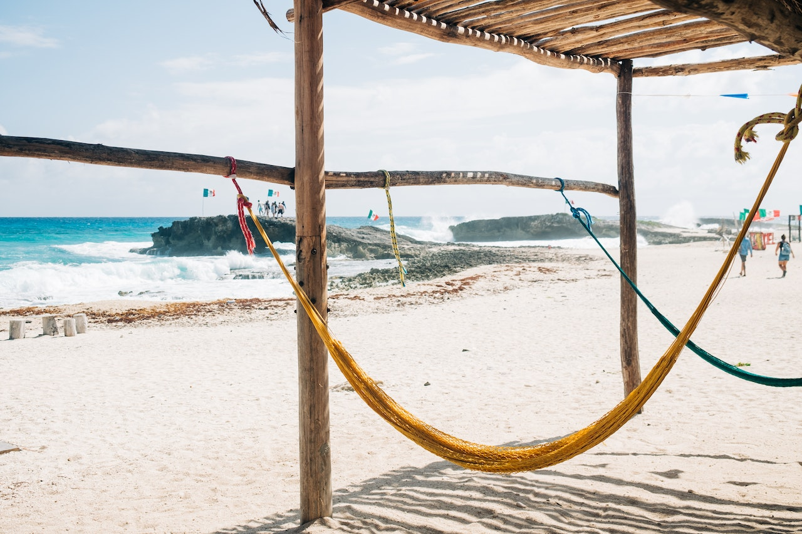

La hamaca, cuyo nombre en haitiano, hamac, significa árbol, fue bautizada por los conquistadores con ese nombre por haber encontrado en las Antillas las primeras hamacas tejidas con filamentos de corteza de árbol. Después fue empleada para su confección la fibra de varios agaves. La hamaca consistía en una red formada de hilos gruesos y anchos claros, pendiente en el aire entre dos troncos de árboles a modo de bolsa colgante, para recostarse a descansar y para mecerse en vaivén entre sus mallas.
No pudiendo los residentes hispanos soportar el intenso calor de Yucatán, sobre todo en verano, idearon convertir en cama esa suave hamaca de Santo Domingo. Y de aquí que se extendió tan rápidamente su uso, que a los pocos años de gobierno colonial, hasta los indios más pobres y miserables abandonaron sus camas de palos, sus esteras de esparto y sus tramas de sogas, para descansar entre la mullida y fresca red de cómodas hamacas.
Y entonces comenzó a perfeccionarse el procedimiento en su confección. Las primeras hamacas eran casi semejantes a una red de pescar y sus aberturas eran muy anchas entre nudo y nudo. No fue sino en Yucatán cuando, urgido el colono por la necesidad de perfeccionamiento, comenzó a inventar nuevos tejidos o mallas hasta hallar el que perdura a la fecha y que consiste en hilos entrecruzados que se distienden o aprietan a voluntad.
Se urde la hamaca en un bastidor que consta de dos largos palos de madera, cilíndricos y perpendiculares, como de cinco centímetros de grueso por cerca de dos metros de largo, colocados paralelamente uno enfrente del otro, a una distancia de metro y medio o dos metros, según el tamaño que se quiera dar a la hamaca. Estos palos se encajan sobre bases de madera fuerte y están unidos entre sí por dos largueros horizontales que penetran en sendas hendeduras hechas en los mástiles, asegurándose con cuñas; y acercándolos o retirándolos, se gradúa el tamaño de la hamaca.
Se empieza la labor por rodear en forma de madeja los dos palos verticales del bastidor con el hilo que se va a utilizar para el tejido. Ya que hay bastante hilo enmadejado, se toma una aguja o lanzadera labrada en madera fuerte o en hueso, en forma de barquichuelo, calada en el centro y en la que se ha devanado previamente el hilo y comienza la tejedora a entrecruzar éste con los hilos de la urdimbre y poco a poco se va formando la trama de malla característica. Antes de comenzar a tejerse la trama, se teje un borde en forma original que es lo que constituye la orilla de la hamaca.